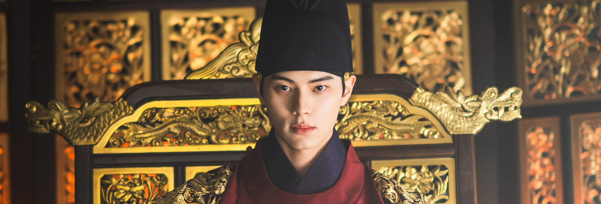
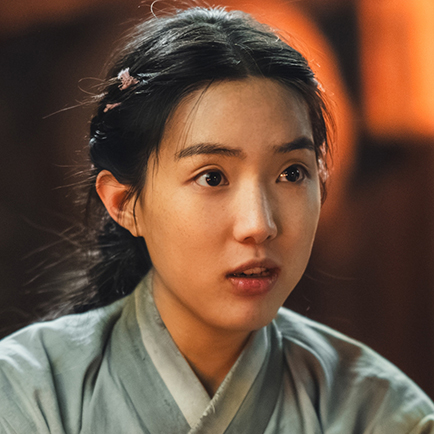
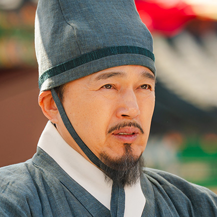
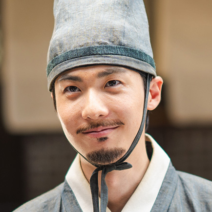

Opening Title & Teaser
Opening Title
“불의 주방, 얼음의 식탁, 그리고 폭군의 미식.”
시대를 초월한 미식의 철학이 불꽃처럼 피어난다.
칼&칼 Teaser
“셰프의 칼끝, 폭군의 칼날과 마주하다.”
서바이벌 Teaser
오늘의 심사위원!
“나의 입맛에 맞지 않을 시에는, 극형에 처할 것이다!”
시대를 뛰어넘는 요리 생존 전쟁
등장인물 소개
연지영
미슐랭 3스타 레스토랑 헤드셰프
미슐랭 3스타 레스토랑 헤드셰프
한국대학의 저명한 사학자 연승우의 외동딸이다.
프랑스 최고 요리대회 ‘라 포엘 도르’에서 우승한 다음 날, 아버지의 부탁으로 고서적 ‘망운록’을 전달받고 한국행 비행기에 오른다.
미슐랭 3스타 레스토랑 ‘해피 큐어’의 헤드셰프가 될 일만을 남겨두고 있었는데 그녀에게 믿을 수 없는 일이 벌어진다. 일식과 함께 비행기 화장실 안에서 망운록이 펼쳐지더니 과거로 시간여행을 하게 된 것.
프랑스 최고 요리대회 ‘라 포엘 도르’에서 우승한 다음 날, 아버지의 부탁으로 고서적 ‘망운록’을 전달받고 한국행 비행기에 오른다.
미슐랭 3스타 레스토랑 ‘해피 큐어’의 헤드셰프가 될 일만을 남겨두고 있었는데 그녀에게 믿을 수 없는 일이 벌어진다. 일식과 함께 비행기 화장실 안에서 망운록이 펼쳐지더니 과거로 시간여행을 하게 된 것.

이헌(연희군)
군주
군주
이헌이 어렸을 적, 모친 연씨가 폐비가 되었다. 어린 이헌이 세자로서 할 수 있는 일은 하나도 없었다. 이헌은 어머니의 죽음에 얽힌 진실을 알기 위해 사라진 그날의 기록, ‘사초’를 찾기 시작했다.
일식이 일어나던 날, ‘귀녀’ 연지영을 만났다. 귀녀가 해준 음식을 먹고 그 맛을 계속 맛보고 싶은 본능이 일었다.
일식이 일어나던 날, ‘귀녀’ 연지영을 만났다. 귀녀가 해준 음식을 먹고 그 맛을 계속 맛보고 싶은 본능이 일었다.
강목주
숙원, 이헌의 후궁
숙원, 이헌의 후궁
천하절색의 미인. 제산대군의 눈에 들어 그를 통해 노래, 춤, 가야금 등을 배웠고, 장안의 이름있는 기녀들에게 남자의 마음을 훔치는 기술을 섭렵했다.
제산대군
사옹원 제조
사옹원 제조
이헌의 숙부. 왕족으로, 선왕인 선종과 배다른 형제다. 허허실실 웃으며 뒤에서는 극악무도한 짓을 서슴지 않는 냉혈한이다.
수라간 사람들

서길금

엄봉식
